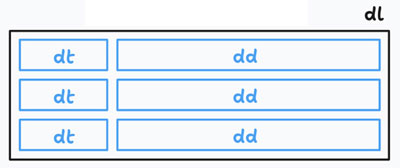
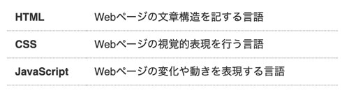

箇条書き横並び
- プロンプト例
定義型リストの例を作成して
- dtとddは、横並び
HTMLの定義型リスト（<dl>）で dt と dd を横並びに表示する。

基本のHTML（定義型リスト）
- 横に並べて１行として表現することが多い（スマートフォンでは、縦の並びが多い）
<dl class="dl-horizontal"> <dt>HTML</dt> <dd>Webページの文章構造を記する言語</dd> <dt>CSS</dt> <dd>Webページの視覚的表現を行う言語</dd> <dt>JavaScript</dt> <dd>Webページの変化や動きを表現する言語</dd> </dl> </dl>
CSS（dt と dd を横並びにする）
方法①：grid を使う（おすすめ）
.dl-horizontal { display: grid; grid-template-columns: 150px 1fr; } .dl-horizontal dt { font-weight: bold; }
方法②：flex を使う
- 「dt」」と「dd」の line-height を同じ値に設定する
.dl-horizontal { display: flex; flex-wrap: wrap; } .dl-horizontal dt { font-weight: bold; line-height: 1.5; } .dl-horizontal dd { line-height: 1.5; }
【表示イメージ】

記述例
<!DOCTYPE html> <html lang="ja"> <head> <meta charset="UTF-8"> <title>定義型リストを横並び</title> <link rel="stylesheet" href="css/style.css"> </head> <body> <dl class="dl-horizontal"> <dt>HTML</dt> <dd>Webページの文章構造を記する言語</dd> <dt>CSS</dt> <dd>Webページの視覚的表現を行う言語</dd> <dt>JavaScript</dt> <dd>Webページの変化や動きを表現する言語</dd> </dl> </dl> </body> </html>
@charset "UTF-8"; /* -------------------------------------------- reset -------------------------------------------- */ * { box-sizing: border-box; margin: 0; padding: 0; } ul { list-style: none; } a { color: inherit; text-decoration: none; } img { max-width: 100%; vertical-align: bottom; } /* -------------------------------------------- body -------------------------------------------- */ body { background-color: #fff; color: #333; font-size: 16px; font-family: "Helvetica", "Arial", sans-serif; line-height: 1.0; } /* -------------------------------------------- layout -------------------------------------------- */ .dl-horizontal { display: grid; grid-template-columns: 120px 1fr; width: 500px; margin: 50px auto; } .dl-horizontal dt { padding: 12px; border-bottom: 1px dotted #999; font-weight: bold; } .dl-horizontal dd { padding: 12px; border-bottom: 1px dotted #999; }